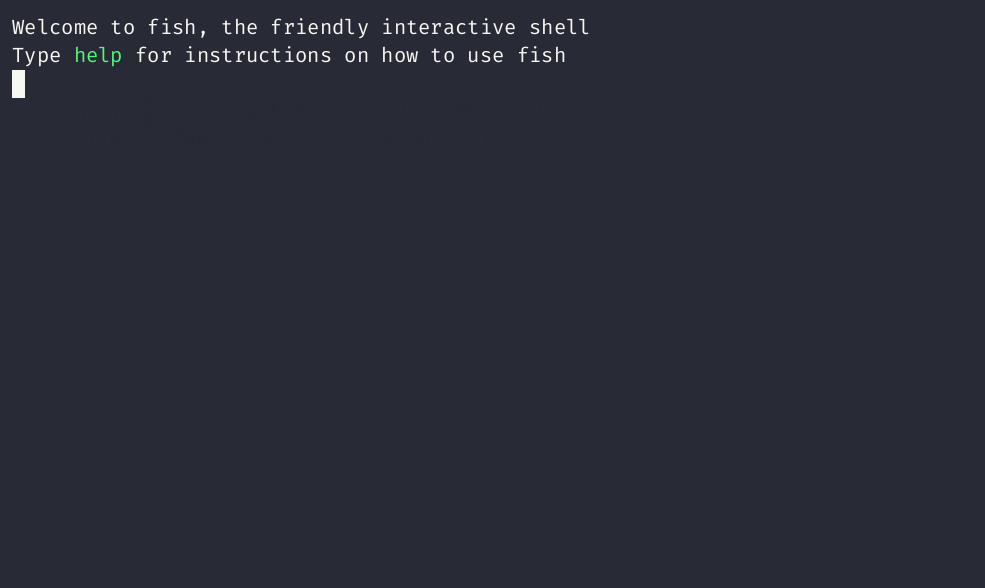
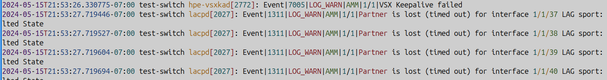
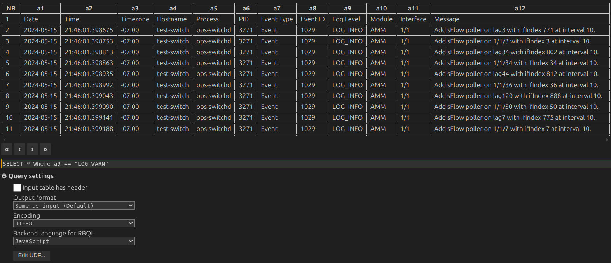
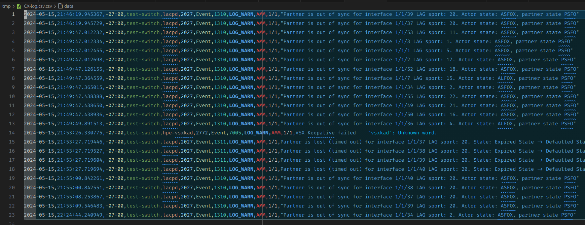

Working with Logs
Linux has a rich set of tools available for collecting and reading log files. The system logs are stored in /var/log and you can use ls -l /var/log to display the logs.
You will see files with .gz extensions. These are log files that have been archived. The system does not delete the log files that are archived.
Global system activity data, including startup messages are logged to /var/log/syslog and /var/log/messages. You can use the built-in tail command to display the logs.
tail -20 /var/log/syslog
will display the last 20 log entries. You can change 20 to any value.
This blog is an in depth article on using the built in tools to display Linux logs - Ultimate Guide to Linux Logging
Tailspin
Overview
Tailspin works by reading through a log file line by line, running a series of regexes against each line. The regexes recognize patterns you expect to find in a log file, like dates, numbers, severity keywords and more.
tailspin does not make any assumptions on the format or position of the items it wants to highlight. For this reason, it requires no configuration and the highlighting will work consistently across different log files.
Installation Instructions
The repository is located here: tailspin. Tailspin is installed using brew install tailspin. There are instructions for tailspin on the README page at the repo.
A second tool, spacer, is very useful with tspin. The spacer repository is located here. spacer is a simple CLI tool to insert spacers when command output stops.
If you're the type of person that habitually presses enter a few times in your log tail to know where the last request ended and the new one begins, this tool is for you!
Spacer is installed using brew install spacer.

Windows
To use tailspin on Windows you will need WSL. See How to install Homebrew on Windows for instructions.
tspin examples
For Linux logs
- tspin --help
- tspin --print /var/log/ufw.log
- tspin --print /var/log/syslog
- journalctl -ef | tspin
Example using spacer
- journalctl -ef | tspin | spacer --after 5
2024-12-21 14:39:06 1.2s ━━━━━━━━━━━━━━━━━━━━━━━━━━━━━━━━━━━━━━━━━━━━━━━━━━━━━━━━━━━━━━━━━━━━━━━━━━━━━━━━━━━━━━━━━━━━━━━━━━━━━━━━━━━━━━━━━━━━━━━━━━━━
Dec 21 14:39:12 1S1K-G5-5587 smartd[2581]: Device: /dev/sda [SAT], SMART Usage Attribute: 190 Airflow_Temperature_Cel changed from 70 to 69
2024-12-21 14:39:14 7.4s ━━━━━━━━━━━━━━━━━━━━━━━━━━━━━━━━━━━━━━━━━━━━━━━━━━━━━━━━━━━━━━━━━━━━━━━━━━━━━━━━━━━━━━━━━━━━━━━━━━━━━━━━━━━━━━━━━━━━━━━━━━━━
Dec 21 14:40:01 1S1K-G5-5587 CRON[3541730]: pam_unix(cron:session): session opened for user mhubbard(uid=1000) by mhubbard(uid=0)
Dec 21 14:40:01 1S1K-G5-5587 CRON[3541734]: (mhubbard) CMD (clamav sleep $((RANDOM % 42)); venv/bin/fangfrisch --conf /etc/fangfrisch.conf refresh)
Dec 21 14:40:01 1S1K-G5-5587 systemd[1]: Starting sysstat-collect.service - system activity accounting tool...
Dec 21 14:40:01 1S1K-G5-5587 CRON[3541730]: pam_unix(cron:session): session closed for user mhubbard
Dec 21 14:40:01 1S1K-G5-5587 systemd[1]: sysstat-collect.service: Deactivated successfully.
Dec 21 14:40:01 1S1K-G5-5587 systemd[1]: Finished sysstat-collect.service - system activity accounting tool.
2024-12-21 14:40:03 49.0s ━━━━━━━━━━━━━━━━━━━━━━━━━━━━━━━━━━━━━━━━━━━━━━━━━━━━━━━━━━━━━━━━━━━━━━━━━━━━━━━━━━━━━━━━━━━━━━━━━━━━━━━━━━━━━━━━━━━━━━━━━━━
You can see the advantage of having spacer put a time stamp and line for each new log entry.
Network Switch log file specific
- tspin CX-log.txt --print
- tspin CX-log.txt --print | grep WARN
- tspin CX-log.txt --print | grep VSX
Add "on the fly" colors
- tspin CX-log.txt --print --words-red LOG_WARN --words-green AMM
- tspin CX-log.txt --print --words-red LOG_WARN,Partner --words-green AMM

Add custom word list to color
tspin uses .toml files for configuration. Here is a sample toml file for a CX switch log
[[keywords]]
words = ['LOG_WARN', 'Partner', 'AdjChg', 'Authorization', 'Authentication', 'User']
style = { fg = "red" }
[[keywords]]
words = ['LAG', 'VSX', 'LLDP']
style = { fg = "green", italic = true }
Here is one I'm working on for Cisco IOS/IOS-XE
[[keywords]]
words = ['LINK', 'CLEAR', 'LINEPROTO', 'UPDOWN', 'Configured', 'from', 'console', 'PARSER', 'SEC', 'SYS', 'CONFIG_I', 'SEC_LOGIN', 'LOGOUT', 'LOGIN_FAILED', 'LOGIN_SUCCESS', 'has exited tty session', 'SSH', 'SSH2_USERAUTH', 'SSH2_SESSION', 'SSH2_CLOSE', 'TTY_EXPIRE_TIMER']
style = { fg = "red" }
[[regexes]]
regex = 'GigabitEthernet\d{1,2}/\d{1,2}/\d{1,2}'
style = { fg = "red" }
[[keywords]]
words = ['LAG', 'vty', 'LLDP', 'CDP', 'GigabitEthernet']
style = { fg = "green", italic = true }
[[keywords]]
words = ['user', 'User', 'Interface']
style = { fg = "blue", bold = true, italic = false }
[[keywords]]
words = ['ILPOWER', 'DETECT', 'POWER_GRANTED', 'IEEE_DISCONNECT']
style = { fg = "magenta", bold = true}
You can create more [[keywords]] entries for other colors. The available colors are:
- default
- black
- red
- green
- yellow
- blue
- magenta
- cyan
- white
- bright_black
- bright_red
- bright_green
- bright_yellow
- bright_blue
- bright_magenta
- bright_cyan
- bright_white`
Create a custom theme directory
In the example above I created a directory ~/.config/tailspin/ to save the toml files in.
mkdir -p ~/config/tailspin
The -p argument will create parent directories if necessary.
Use custom config file
- tspin --print --config-path ~/.config/tailspin/cx-config.toml CX-log.txt
- tspin --print --config-path cx-config.toml CX-log.txt
You could save the toml file in the same directory as the log file and use:
tspin --print --config-path cx-config.toml CX-log.txt but that doesn't scale well. I think it's better to put them in ~/.config/tailspin/ and then create an alias.
alias example
Place in .zshrc
alias tspincx='tspin --print --config-path ~/.config/tailspin/cx-config.toml $1'
To call the alias
tspincx CX-log.txt
CX Log Parse
I wrote a python script that parses the CX log file into a csv file. The file can then be opened in Excel with each field of the file as a column. That allows you to sort and filter the log file. This is useful for Root Cause Analysis documentation purposes if the customer needs it.
Filtering
Including -r after the show logging command outputs the log in reverse order. You can also use the advanced piping features of the CX OS to filter the output. For example:
Will include entries with exceed but exclude entries with 1/1/32. If you use a ? after the pipe symbol | CX will show you examples of filtering.
AI Analysis
If you have a Claude account, you can narrow down the log messages that you think are relevant to the issue using Log Parse and Excel, then have Claude analyze it. You would be surprised how good Claude is at log file analysis.
Rainbow CSV
If you use VS Code, you can install the Rainbow CSV extension and use SQL syntax to parse the file. I find it much faster to use SQL than sorting/filtering in Excel.
Here is a screenshot of the log file open and a query string to pull LOG_WARN messages:

And a screenshot of the result file:

You can see how fast that is to parse a huge log file down to just Warnings!
Execution
Save the code listed below as CX-Log-Parse.py and run:
python CX-Log-Parse.py -f CX-log.txt
This will create a csv file with the name CX-log.csv.
import argparse
import csv
import re
import sys
from pathlib import Path
# Updated regex pattern to account for either a value like "1/1" or "-"
log_pattern = re.compile(
r"(?P<date>\d{4}-\d{2}-\d{2})T(?P<time>\d{2}:\d{2}:\d{2}\.\d+)(?P<timezone>[+-]\d{2}:\d{2}) (?P<hostname>\S+) (?P<process>\S+)\[(?P<pid>\d+)\]: (?P<event_type>\S+)\|(?P<event_id>\d+)\|(?P<log_level>\S+)\|(?P<module>\S+)\|(?P<interface>(?:\S+|-)?)\|(?P<message>.+)"
)
parser = argparse.ArgumentParser()
parser.add_argument("-f", "--Log_filename", dest="Log_filename")
args = parser.parse_args()
Log_filename: str = args.Log_filename
if Log_filename is None:
print("-f Log filename is a required argument")
sys.exit()
csv_filename: str = Path(Log_filename).stem + ".csv"
# Get path and add Log Filename to it
my_dir: Path = Path().resolve()
Log_file_Exists: Path = my_dir.joinpath(Log_filename)
# Open log file and CSV file
if Log_file_Exists.exists():
with (
open(Log_filename, "r") as log_file,
open(csv_filename, "w", newline="") as csv_file,
):
csv_writer = csv.writer(csv_file)
# Write CSV header
csv_writer.writerow(
[
"Date",
"Time",
"Timezone",
"Hostname",
"Process",
"PID",
"Event Type",
"Event ID",
"Log Level",
"Module",
"Interface",
"Message",
]
)
# Parse each log line
for line in log_file:
match = log_pattern.match(line)
if match:
# Write the captured groups to the CSV
csv_writer.writerow(match.groups())
print(f"Log file saved to: {csv_filename}")
else:
print(f"Log file {Log_filename} does not exist")
sys.exit()